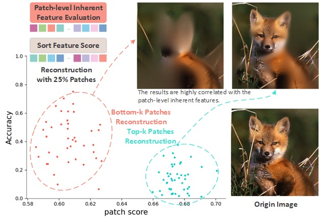
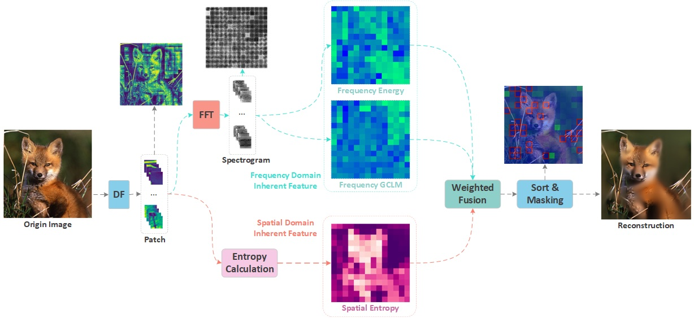

Overview
MIF scores image patches using frequency-domain and texture features, then retains higher-scoring patches for Masked Autoencoder reconstruction. The patch-selection strategy is training-free.



Figures from the paper: Huang et al., ICASSP 2024.
Research
- Developed MIF, a training-free, feature-guided patch selection strategy for Masked Autoencoder image reconstruction.
- Performed reconstruction error analysis using Pandas and NumPy, identifying strong correlations between image texture complexity and reconstruction quality that guided model optimization.
- Published and presented as a first-author paper at ICASSP 2024.
Paper
Patch Inherent Feature Guided Mask Selection for Image Compression